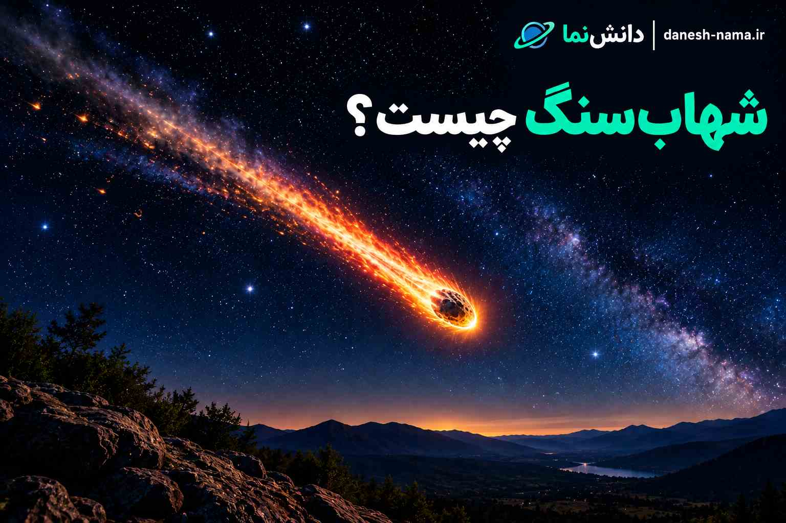

شهابسنگ چیست؟ تفاوت شهاب، شهابواره و سیارک
وقتی یک نور درخشان برای چند ثانیه در آسمان شب ظاهر میشود، ممکن است آن را «شهاب» بنامیم. اما آیا آن نور واقعاً یک شهابسنگ است؟ در زبان روزمره این واژهها گاهی به جای یکدیگر استفاده میشوند، اما در علم نجوم تفاوت مهمی میان شهابواره، شهاب، شهابسنگ و سیارک وجود دارد. در این مقاله از دانشنما بررسی میکنیم هرکدام دقیقاً چه هستند، چگونه شکل میگیرند و چه اتفاقی برای آنها هنگام نزدیک شدن به زمین رخ میدهد.
شهابواره چیست؟
شهابواره یا Meteoroid جرمی نسبتاً کوچک از سنگ یا فلز است که در فضا حرکت میکند. اندازه شهابوارهها میتواند بسیار متفاوت باشد. برخی بسیار کوچک هستند و برخی میتوانند اندازهای بزرگتر داشته باشند. شهابوارهها ممکن است بقایای برخورد اجرام بزرگتر، تکههایی از سیارکها یا در برخی موارد قطعات جداشده از دنبالهدارها باشند.
شهاب چیست؟
وقتی یک شهابواره با سرعت زیاد وارد جو زمین میشود، با مولکولهای موجود در جو برخورد میکند. در این فرایند، مسیر آن میتواند بسیار داغ و درخشان شود و ما یک رد نورانی را در آسمان مشاهده کنیم. این پدیده نورانی «شهاب» نام دارد. بنابراین شهاب در واقع نام خود جرم نیست؛ بلکه نام پدیده نوریای است که هنگام عبور جرم از جو مشاهده میکنیم.
شهابسنگ چیست؟
گاهی بخشی از یک شهابواره پس از عبور از جو زمین کاملاً از بین نمیرود و به سطح زمین میرسد. به قطعهای که به سطح زمین میرسد شهابسنگ یا Meteorite گفته میشود. پس هر شهابی الزاماً شهابسنگ ایجاد نمیکند. بسیاری از اجرام کوچک هنگام عبور از جو کاملاً متلاشی یا تبخیر میشوند.
سیارک چیست؟
سیارکها اجرام سنگی یا فلزی هستند که به دور خورشید حرکت میکنند. بیشتر سیارکهای شناختهشده در منظومه شمسی در ناحیهای میان مدار مریخ و مشتری قرار دارند، هرچند سیارکها میتوانند در نواحی دیگری نیز وجود داشته باشند. سیارکها معمولاً بسیار بزرگتر از شهابوارههای کوچک هستند.
تفاوت شهاب، شهابواره و شهابسنگ چیست؟
| نام | تعریف | محل مشاهده |
|---|---|---|
| شهابواره | جرم کوچک سنگی یا فلزی در فضا | فضا |
| شهاب | پدیده نورانی هنگام ورود جرم به جو | آسمان |
| شهابسنگ | بخشی از جرم که به سطح زمین میرسد | سطح زمین |
| سیارک | جرم بزرگتر سنگی یا فلزی در مدار خورشید | فضای منظومه شمسی |
چرا شهابها در آسمان میدرخشند؟
وقتی یک شهابواره با سرعت بسیار زیاد وارد جو میشود، با ذرات و مولکولهای موجود در جو برخورد میکند. این برخوردها باعث ایجاد شرایط بسیار داغ در اطراف جرم و مسیر حرکت آن میشوند و در نتیجه یک پدیده نورانی ایجاد میشود که از زمین به صورت یک خط یا نقطه درخشان دیده میشود. به همین دلیل است که شهابها ممکن است فقط برای مدت بسیار کوتاهی در آسمان دیده شوند.
آیا شهابسنگها داغ هستند؟
ممکن است تصور شود هر شهابسنگی که روی زمین پیدا میشود باید کاملاً داغ و سوزان باشد. اما وضعیت شهابسنگ پس از عبور از جو به عوامل مختلفی بستگی دارد. بخش بیرونی جرم ممکن است در اثر عبور از جو بهشدت گرم شود، ولی این موضوع به این معنی نیست که تمام بخش داخلی آن الزاماً در همان شرایط قرار دارد. بنابراین نباید تصور کرد که هر شهابسنگ تازهرسیده حتماً مانند یک گلوله آتشین روی زمین باقی میماند.
شهابسنگها از کجا میآیند؟
بسیاری از شهابسنگهایی که روی زمین پیدا میشوند منشأ خود را در اجرام مختلف منظومه شمسی دارند. برخی میتوانند از قطعات سیارکها باشند. برخی دیگر ممکن است اطلاعاتی درباره مواد اولیه تشکیلدهنده منظومه شمسی در اختیار دانشمندان قرار دهند. به همین دلیل مطالعه شهابسنگها برای شناخت تاریخ اولیه منظومه شمسی اهمیت زیادی دارد.
انواع اصلی شهابسنگها
شهابسنگها از نظر ترکیب و ساختار تفاوت دارند. سه گروه اصلی که معمولاً برای دستهبندی آنها استفاده میشود عبارتاند از:
- شهابسنگهای سنگی: بخش عمدهای از ترکیبات آنها از مواد سنگی و کانیها تشکیل شده است.
- شهابسنگهای آهنی: مقدار قابل توجهی آهن و نیکل دارند.
- شهابسنگهای سنگی-آهنی: ترکیبی از مواد سنگی و فلزی هستند.
تفاوت شهابسنگ و سیارک چیست؟
سیارک یک جرم فضایی نسبتاً بزرگ است که به دور خورشید حرکت میکند. اما شهابسنگ قطعهای است که پس از عبور از جو زمین به سطح زمین رسیده است. بنابراین یک سیارک میتواند منشأ برخی شهابسنگها باشد، اما این دو واژه به یک چیز اشاره نمیکنند.
آیا همه شهابوارهها به زمین میرسند؟
خیر. بسیاری از شهابوارههایی که وارد جو زمین میشوند به دلیل اندازه کوچک یا شرایط ورود، در جو متلاشی یا تبخیر میشوند. فقط بخشی از آنها میتوانند قطعاتی را به سطح زمین برسانند.
بارش شهابی چیست؟
گاهی در یک بازه زمانی مشخص، تعداد زیادی شهاب در آسمان دیده میشوند. به این پدیده بارش شهابی گفته میشود. بارشهای شهابی معمولاً زمانی اتفاق میافتند که زمین از میان بقایای باقیمانده از یک دنبالهدار یا جرم دیگر عبور میکند.
در چنین شرایطی تعداد زیادی ذره وارد جو زمین میشوند و هرکدام میتوانند یک شهاب ایجاد کنند. اگر میخواهید درباره اجرام مختلف منظومه شمسی بیشتر بدانید، مقاله منظومه شمسی چیست؟ را در دانشنما بخوانید.
آیا شهابسنگها خطرناک هستند؟
بیشتر اجرام کوچکی که وارد جو زمین میشوند قبل از رسیدن به سطح زمین از بین میروند. با این حال، اجرام بزرگتر میتوانند اثرات بسیار گستردهتری داشته باشند. به همین دلیل دانشمندان اجرام نزدیک زمین را با تلسکوپها و سامانههای مختلف رصد میکنند. مطالعه این اجرام به دانشمندان کمک میکند مسیر حرکت آنها را بهتر بشناسند.
چگونه یک شهابسنگ را از یک سنگ معمولی تشخیص دهیم؟
تشخیص قطعی شهابسنگ همیشه از روی ظاهر امکانپذیر نیست. برخی شهابسنگها ویژگیهایی دارند که آنها را از سنگهای معمولی متمایز میکند، اما برای تأیید علمی معمولاً به بررسی دقیق و آزمایشگاهی نیاز است. بنابراین صرفاً عجیب بودن ظاهر یک سنگ به معنی شهابسنگ بودن آن نیست.
شهابسنگها چه اطلاعاتی درباره منظومه شمسی دارند؟
یکی از دلایل مهم مطالعه شهابسنگها این است که بعضی از آنها مواد بسیار قدیمی منظومه شمسی را در خود حفظ کردهاند. بررسی ترکیبات شیمیایی و ساختار این اجرام میتواند اطلاعاتی درباره شرایطی که در مراحل اولیه شکلگیری منظومه شمسی وجود داشته است در اختیار دانشمندان قرار دهد. به همین دلیل شهابسنگها فقط سنگهایی از آسمان نیستند؛ آنها میتوانند مانند نمونههایی طبیعی از تاریخ منظومه شمسی باشند.
مطالب مرتبط در دانشنما
- منظومه شمسی چیست؟
- مریخ چیست و چه ویژگیهایی دارد؟
- خورشید چیست؟
- ستارهها چگونه شکل میگیرند؟
- کهکشان راه شیری چیست؟
- سیاهچاله چیست؟
جمعبندی
شهابواره، شهاب و شهابسنگ سه اصطلاح متفاوت هستند. شهابواره جرمی است که در فضا حرکت میکند. وقتی چنین جرمی وارد جو زمین میشود و پدیده نورانی ایجاد میکند، آن پدیده را شهاب مینامیم. اگر بخشی از جرم بتواند از جو عبور کند و به سطح زمین برسد، به آن شهابسنگ گفته میشود. سیارک نیز جرم بزرگتری است که در منظومه شمسی به دور خورشید حرکت میکند و برخی شهابوارهها میتوانند از قطعات سیارکها به وجود آمده باشند.
نظرات کاربران